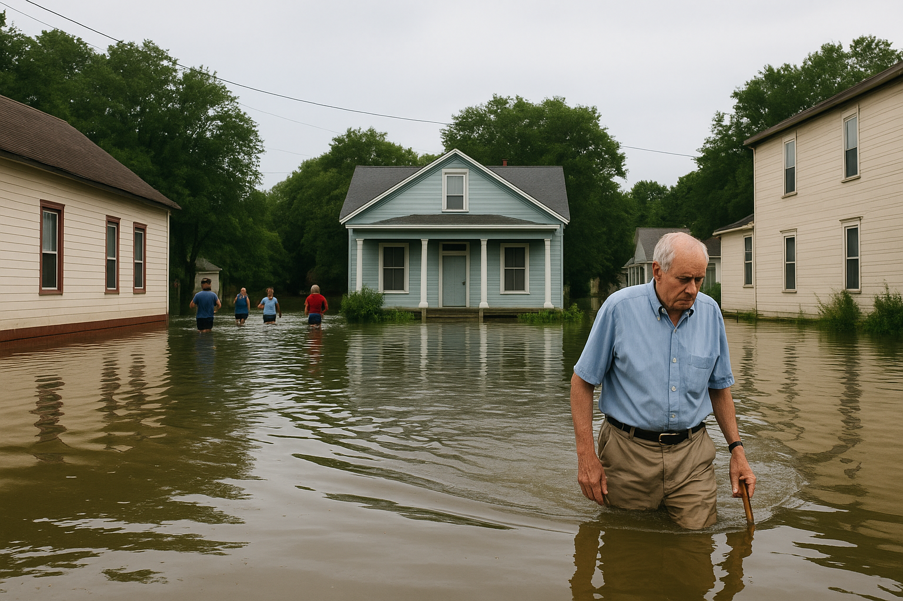
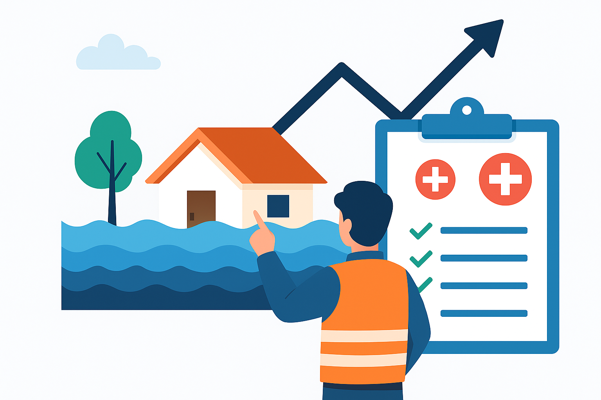
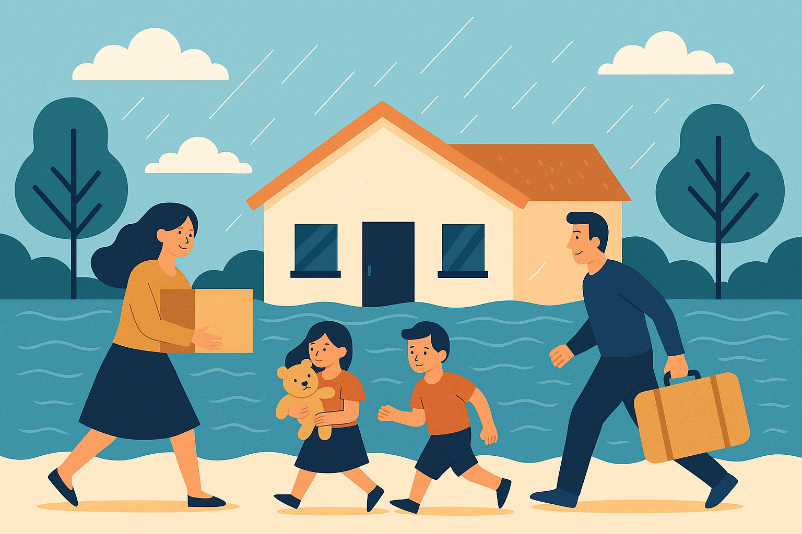
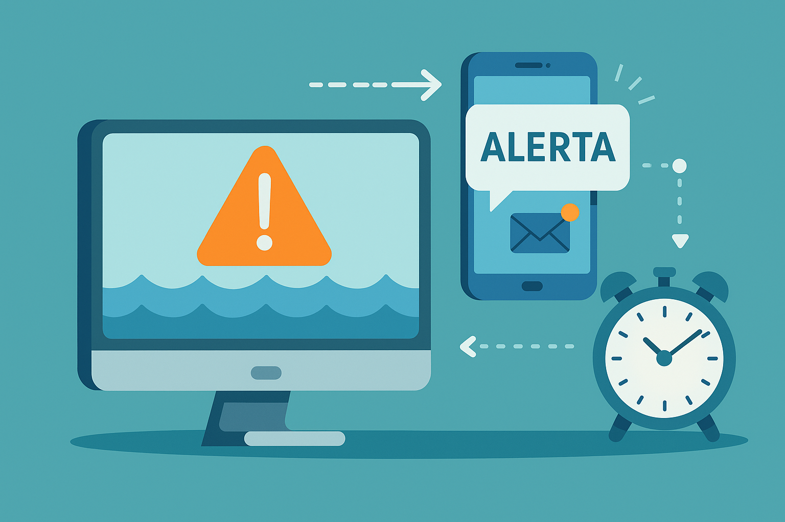
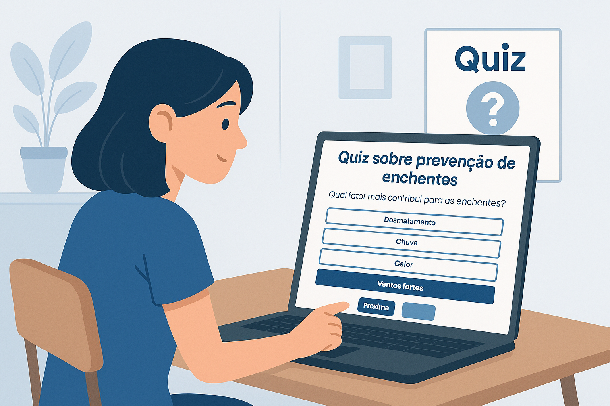

O Problema
Enchentes afetam milhares de pessoas, causando prejuízos materiais e riscos à vida humana.
Falta de monitoramento em tempo real dificulta ações preventivas e agrava desastres naturais.
Tecnologias
Sensor ultrassônico IoT monitora o nível da água, enviando dados locais em tempo real.
Python processa os dados e gera alertas e relatórios automáticos; APIs meteorológicas oferecem previsões.
Objetivos
Reduzir riscos de enchentes por meio de monitoramento contínuo e alertas precisos.
Proteger comunidades vulneráveis e minimizar impactos financeiros e sociais.
Público-Alvo
Comunidades em áreas de risco, prefeituras, defesa civil e cidadãos.
Famílias residentes em regiões suscetíveis a alagamentos frequentes.
Benefícios
Alertas antecipados salvam vidas e reduzem danos materiais significativos.
Fácil implementação, baixo custo e acesso rápido a informações críticas.
Como Ajuda no Dia a Dia
Envio de alertas por SMS e e-mail quando o nível da água atinge limites críticos.
Relatórios diários com tendências de enchente, facilitando a tomada de decisão.
Quiz
Será que você sabe o que causa enchentes e como a tecnologia pode ajudar a preveni-las?
Responda ao nosso quiz interativo e descubra como o monitoramento inteligente pode salvar vidas e proteger comunidades.
Prepare-se para aprender enquanto se diverte!